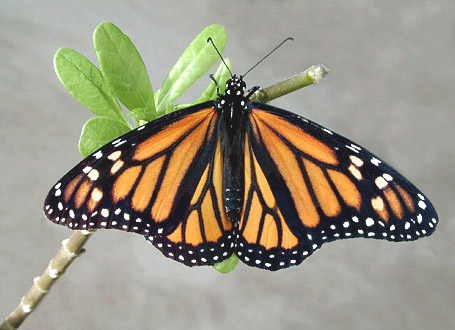
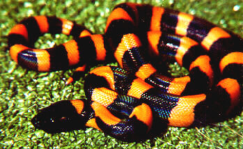
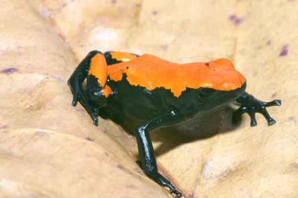
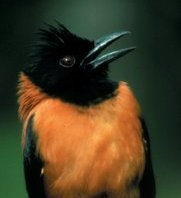

The North American Monarch Butterfly

Ringed
Python
-- northeast Papua-New Guinea

Splash-back
poison frog from the southern
tributaries of the Amazon

A toxic bird from the Pitohui genera from New Guinea